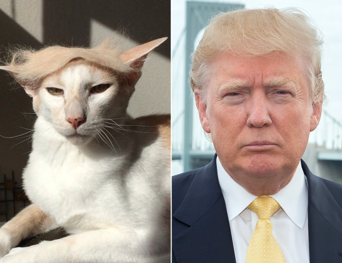

Yep, self-care is more important than ever these days. Why?
You can't support others when you're mentally and physically drained. And supporting others is what this is all about.
Self-care activity directly counteracts the negative effects of consuming depressing news all day.
Taking care of yourself reminds you that there are reasons to resist, and important things to fight for.
Self-care improves your mental acuity, aka helps you tune in to what may or may not be BS.

Figure 1.2: Increased mental acuity helps you discern trustworthiness, reliability, and compassion. Can you compare and contrast those qualities in the two individuals pictures?